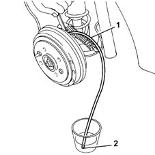
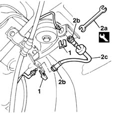

3330E34 Intermediate FLEXIBLE PIPE (one), left or right, to rear brakes - R.R.
- Path
- Procedures > 33 BRAKING SYSTEM > 3330 HYDRAULIC BRAKING SYSTEM > 3330E hydraulic brake system pipes > 3330E34 Intermediate FLEXIBLE PIPE (one), left or right, to rear brakes - R.R.
- Kind
- repair procedure (removal / refitting; the operation number is the code)
- Applies to
- all engines; all production periods
- Interactive page
- https://sloeber94.github.io/elrnDB-fMltpl/en/#/2891639
Applies to: all engines; all production periods
 Removing
Removing
 Refitting
RefittingPlace the car on a lift.
4450B11 WHEEL (one) rear - R.R.
Using a syringe, drain the brake fluid from the reservoir.
Remove the protective cap from the bleed screw for the rear brake cylinder.
1. Fit a transparent plastic pipe on the bleed valve.
2. Insert the other end of the pipe in a container.

Applies to: all engines; all production periods
Loosen the bleed screw.
Lower the brake pedal until it is in the end of travel position.
Tighten the bleed screw when the brake pipe has been drained.
1. Remove the retaining spring.
2. Using the tool (2a), undo the connectors (2b), then remove the flexible pipe (2c).
 | Name | Country |
|---|---|---|
2a | Box wrench for brake fittings | 1.856.132.000 |

Applies to: all engines; all production periods
Refitting
RemovingUsing a special spanner, tighten the connectors for the brake pipe.
| Name | Country |
|---|---|---|
- | Box wrench for brake fittings | 1.856.132.000 |
Secure the pipe using the special spring.
3330A10 BRAKE FLUID - Check level and top up, if necessary.